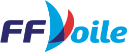
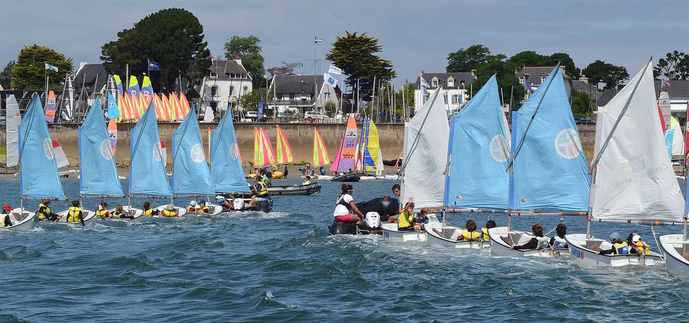
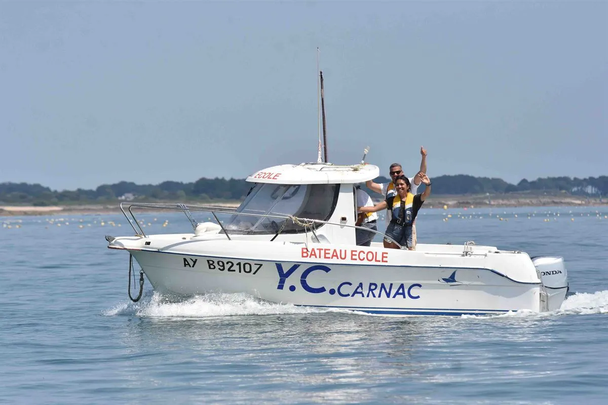
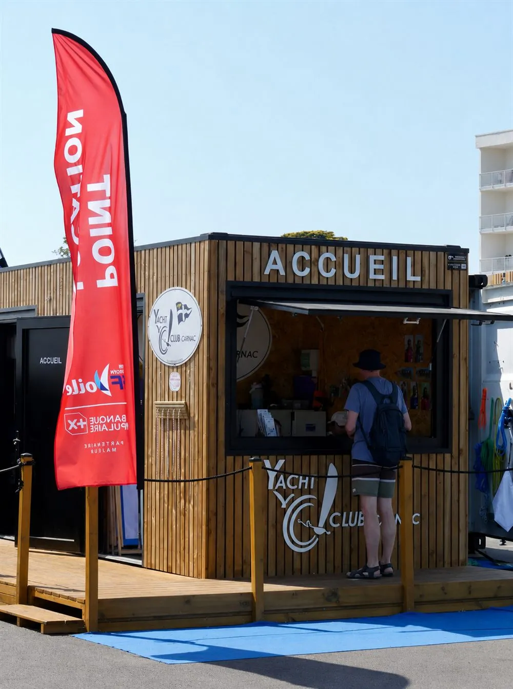
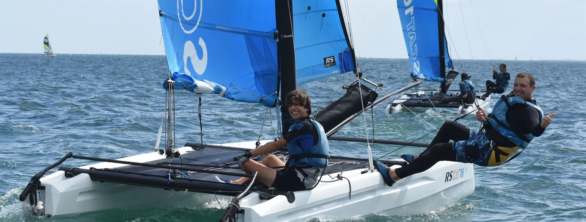
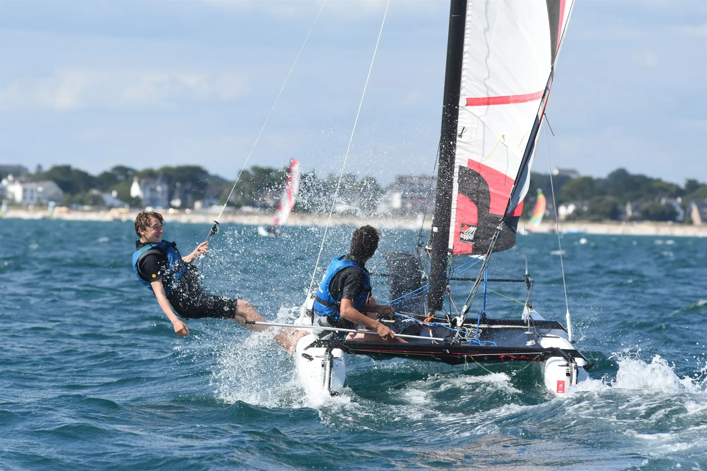
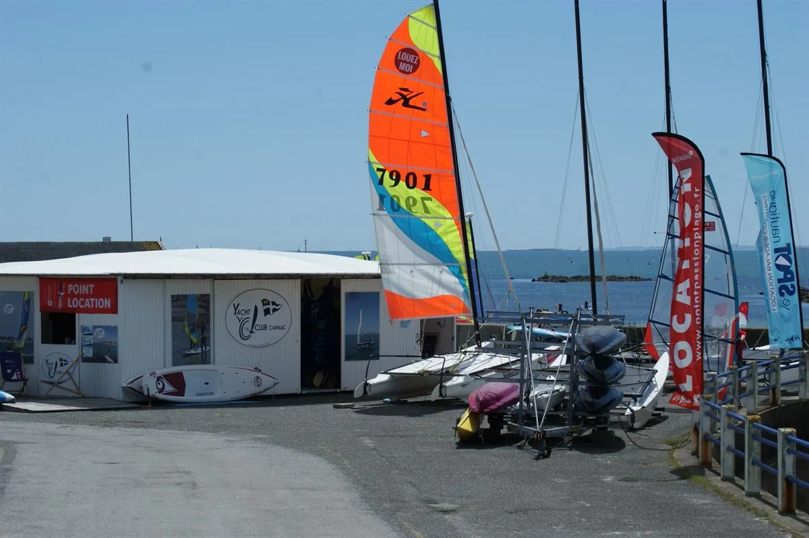

Stages enfants & ados
Une semaine pour apprendre à barrer, régler et prendre le vent, en petits groupes de niveau, du moussaillon au régatier.
En savoir plusDepuis Port en Dro à Carnac, apprenez à naviguer, embarquez pour une sortie ou lancez-vous en régate — face à l'un des plus beaux plans d'eau de Bretagne.
Depuis 1960, à Port en Dro, plus de 65 ans de passion pour la voile, partagée avec petits et grands.
Le Yacht Club de Carnac fait naviguer tout le monde, toute l'année, sur l'une des plus belles bases nautiques d'Europe. Moniteurs professionnels diplômés, flotte entretenue et esprit convivial : ici, on prend le large en confiance — dès 4 ans et quel que soit son niveau.

· École Française de Voile
Que vous vouliez apprendre, vous perfectionner ou simplement profiter d'une belle journée en mer, il y a une formule pour vous.
Une semaine pour apprendre à barrer, régler et prendre le vent, en petits groupes de niveau, du moussaillon au régatier.
En savoir plusUn moniteur rien que pour vous ou votre équipage, pour progresser vite sur le support de votre choix.
Prendre rendez-vousCatamaran, planche, kayak ou stand-up paddle : embarquez à l'heure ou à la journée, dès que la météo s'y prête.
Vérifier les disposDeux heures pour goûter à la voile sans engagement, encadré et en toute sécurité, seul, en famille ou entre amis.
Réserver une sortieUn calendrier animé toute la saison, des régates départementales aux championnats du monde accueillis dans la baie.
Voir le calendrierOffrez une journée au grand air : une carte à utiliser librement sur les stages, cours et sorties.
Offrir la voileCinq matinées ou après-midis pour gagner en autonomie, dans une ambiance où l'on apprend vraiment en s'amusant. Groupes de niveau, matériel adapté à chaque âge, et toujours un moniteur diplômé à bord.



Photos © Yacht Club de Carnac · P. Maheo
Au-delà des vacances, rejoignez l'École de Sport : en loisir ou en compétition, dès 6 ans grâce au Pass'Sport. La cotisation annuelle au club et la licence FFVoile s'ajoutent à l'inscription.
Gagner en autonomie par l'approfondissement des compétences, dans la bonne humeur.
Préparation aux régates et à la performance, encadrée par nos entraîneurs.
Un carnet nominatif de 10 séances, à utiliser librement selon vos envies et la météo.
Un créneau dédié pour naviguer entre femmes, à son rythme et en confiance.
Une base nautique complète, ouverte toute l'année, avec une foule de services à découvrir.
Le calendrier de la saison, mis à jour au fil de l'eau. Ouvert aux licenciés comme aux curieux venus encourager depuis la plage.
Avant de larguer les amarres, un œil sur le vent et la mer au large de Carnac — Baie de Quiberon.
La mer est notre terrain : on en prend soin. Du choix du matériel aux gestes du quotidien, le club s'engage pour une pratique douce avec la baie et son littoral.
Ma fille est rentrée de son stage avec des étoiles plein les yeux — et elle sait désormais border sa voile toute seule. Moniteurs au top, groupe bienveillant.
Débutant complet, j'ai pris trois cours particuliers avant l'été. Résultat : j'ai loué un catamaran seul en août. Pédagogie claire et rassurante.
On vient en famille depuis trois ans pour la sortie découverte. La baie est magnifique et l'accueil toujours aussi chaleureux. On reviendra !
Ils soutiennent le club
Suivez nos navigations sur Instagram
Régates, stages et couchers de soleil sur la baie — le quotidien du club sur @yachtclubcarnac.

